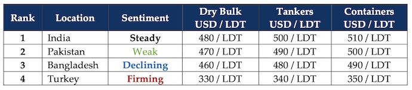

inWeekly Demolition Reports07/10/2024
As war increasingly rips through the seams across Middle Eastern borders and news of even larger ordnances being usedon civilians in the Russia – Ukraine war breaks out, death tolls of the innocent continue to regrettably climb every week, all whilst world economies themselves become victims of widening nuclear threats emerging from the area that stand to quicksand the entire region into a global conflict and has even left an unrelated ship recycling industry afflicted and devoid of tonnage for over a year now, as manifestations of illusory gains were coming forth this week. With Hamas and Hezbollah in its crosshairs, Israel continues its unrelenting incursions into Gaza & Lebanon, the world fearfully awaits a certain and greater conflict with Iran, which Israel has sworn to avenge and has even been green-lit by the Americans this week, turning the situation frighteningly grim given that the U.S. itself has executed targeted air strikes across Yemen (including the capital city of Sanaa) on the back of the Houthis unjustifiably bombing another British Oil Tanker as the CORDELIA MOON was struck in the Red Sea this week, turning the forecast for the future “fiery with a chance of a wider war”. Whilst news on prospective Iranian targets remains uncertain as rumors of strikes against Iran’s nuclear facilities make the rounds, strikes against Iranian oil refineries / installations and major seaports are expected, causing crude oil prices to jump as the week came to an end. Whilst Iranians threaten further escalation via the retaliatory use of nuclear weapons in the event of an Israeli strike, global economies stand to endure another round in the ring with inflation in the near future, and questionably beyond.
Meanwhile, for the 2nd running week and on the back of firming Chinese plate prices last week, ship recycling markets endured some positive moves as local plate prices remain on a positive to firm footing across the board. Increasing magnification into local markets proved to be a reality check via the ongoing lack of tonnage that is once again rearing its head across various recycling waterfronts, in typifying this dark year in ship recycling. After the U.S. Fed rate cut of 0.5% on interest rates a couple of weeks back and global currencies took a moment to adjust, this week, nearly all recycling nation currencies resumed their depreciations against the U.S. Dollar adding further jitters to a skirt of tonnage that is barely covering the ship recycling body. The Indian markets witnessed the most positivity of the week, but any gains seem destined to being stalled with the general expectation that the market has reached a state of equilibrium. Bangladesh continues to slip landing at last place in the market rankings, whilst Pakistan (perhaps reactionarily) responded to firming plate prices in China from recent weeks, recording improvements of their own that were followed by firming prices from Gadani as well. Turkey at the far end reported further improvements in steel, drops in TRY, and firming prices, all in the hopes of enticing tonnage once again. As global stock markets rally in the wake of announcements on economic stimuli in China in the wake of measures being set in place for the 75th Anniversary of CCP rule, the ongoing October holidays (in China) have stalled any positive moves that may otherwise be in the process of being garnered. And with oil expected rise, could tankers for recycling become the diet for Q4 or even 2025? Time will tell. For now, the world turns cockeyed, with one eye on how China opens after the holidays and the other on the Middle East, where a wider war now seems imminent.
For Week 40 of 2024, GMS Market Rankings / vessel indications are as below.

📄 Download PDF: Ship-recycling-market-insight-Week-40-10-04-2024-Nuclear-Quicksand.pdf
Source: GMS,Inc.https://www.gmsinc.net/gms_new/index.php/web